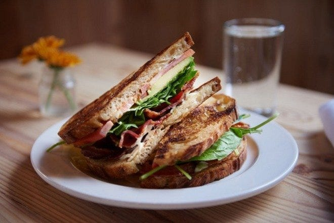

Lorraine's Club Sandwich
Back to Home

Description
An easy, quick, and delicious sandwich to eat anytime.
Ingredents
- 2 slices bacon
- 3 slices bread, toasted
- 3 tablespoons mayonnaise
- 2 leaves lettuce
- 2 (1 ounce) slices cooked deli turkey breas
- 2 slices tomato
Steps
- Place bacon in a heavy skillet. Cook over medium high heat until evenly brown. Drain on paper towels.
- Spread each slice of bread with mayonnaise. On one slice of toast, place the turkey and lettuce. Cover with a slice of toast, then the bacon and tomato. Top with last slice of toast.